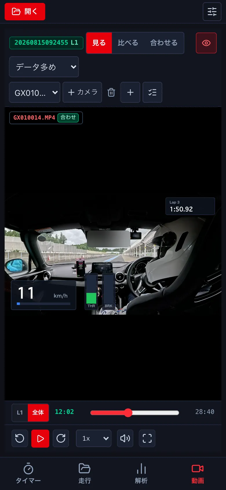
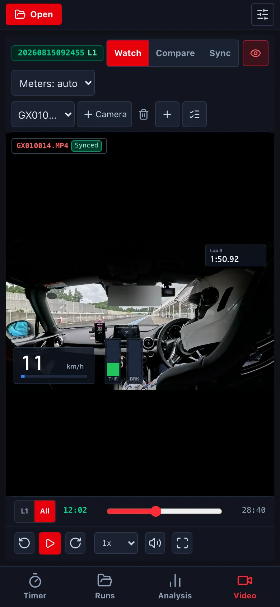
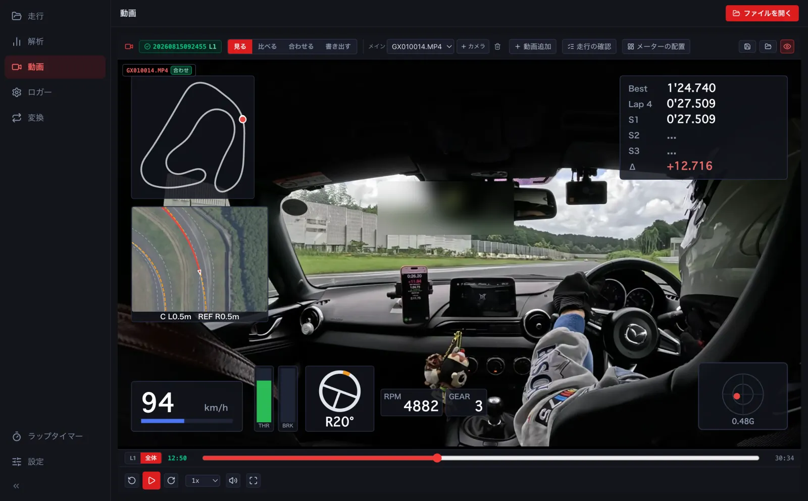
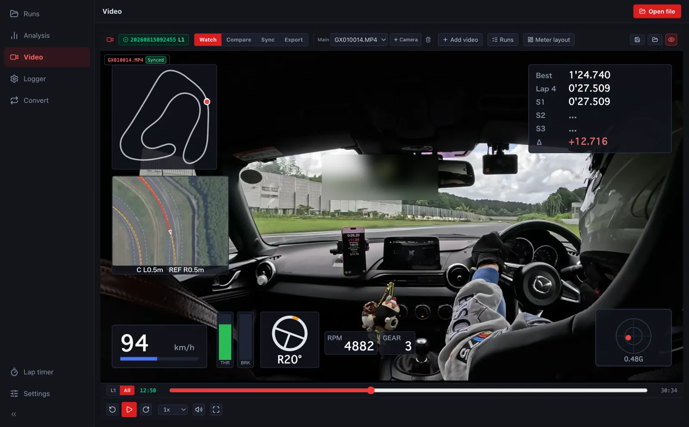
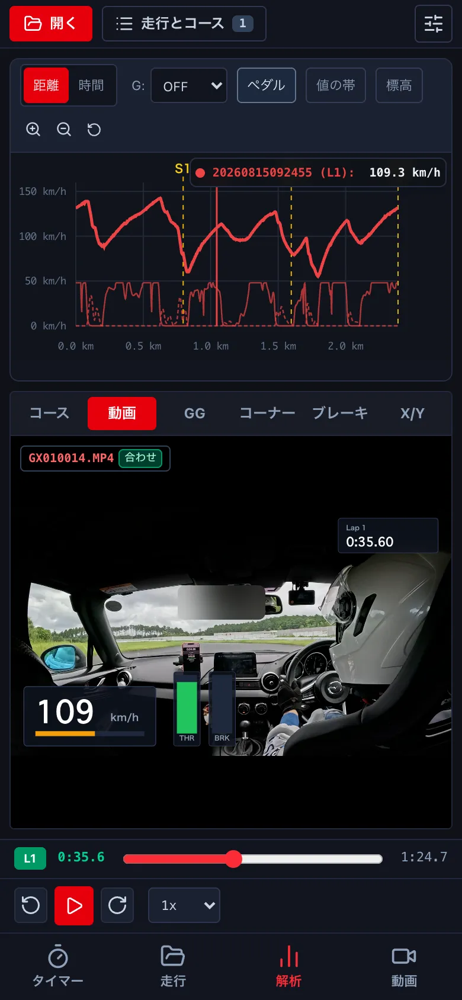
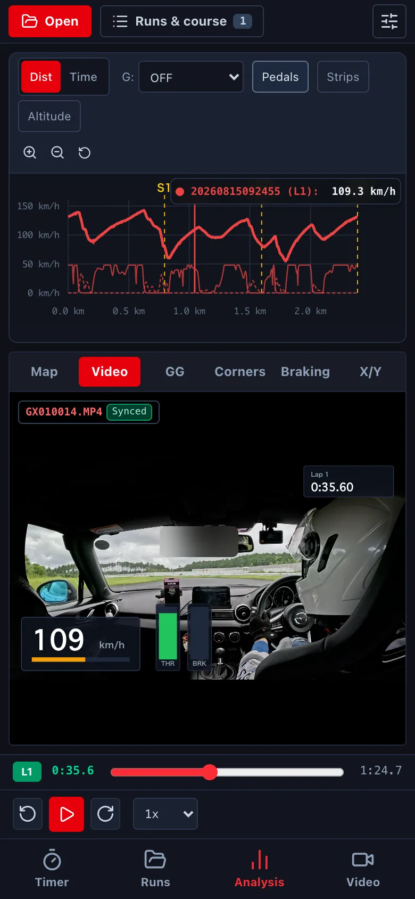

動画を見るWatching videos
車載動画を、速度・G・ラップタイムなどのメーターと一緒に見ます。動画は走行のログと同じ時刻で動きます。Watch onboard video with gauges for speed, G, lap time and more. The video runs in step with the log.
-
走行 で走行を押し、動画を見る を押します。いちばん速い周から始まります。Open a run in Runs and press Watch video. It starts from the fastest lap.




- ログと動画のファイルを ファイルを開く で一緒に開きます。GoPro の動画は、撮影の時刻と動画の GPS で自動で合います。Open the log and the video together with Open file. GoPro videos sync automatically from their timestamp and GPS.
-
解析の画面でも、下の欄の 動画 で見られます。In Analysis, the Video tab in the bottom panel shows it too. 解析の画面でも、左下の 車載動画 で見られます。In Analysis, the onboard video panel at the bottom left shows it too.


- メーターの並びは、動画の上の選び (自動・標準・データ多め・グラフ・最小、自分の並び) で替えます。目のマークでメーターを隠します。Change the meter layout with the selector above the video (auto, standard, more data, graph, minimal, or your own). The eye icon hides the meters. メーターの並びは メーターの配置 (→ F1) か、書き出しの画面で選びます。目のマークでメーターを隠します。Choose the meter layout in Meter layout (→ F1) or in the export window. The eye icon hides the meters.
- 下の L1 / 全体 で、周の中だけを動かすか、動画全体を動かすかを切り替えます。Use L1 / All at the bottom to move within the lap or across the whole video.